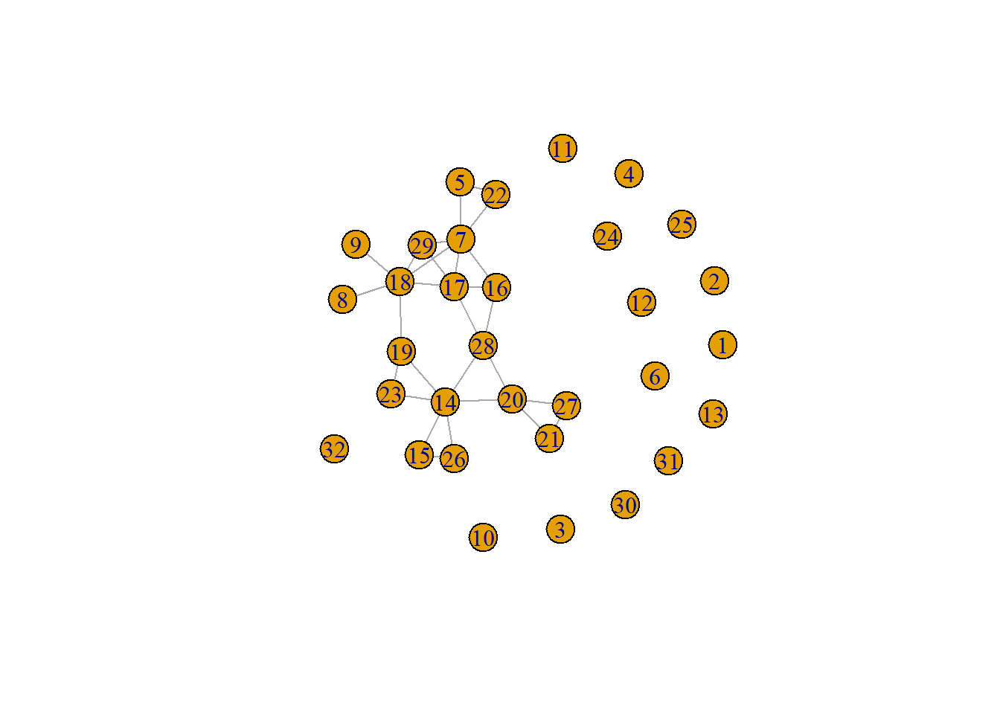

Journal 5
Daphne Janssen
Last compiled on 2022-11-01 10:12:36
1 First version complete journal
1.1 Array, descriptive statistiscs and plot Sociology
1.1.1 Creating an array
# start with clean workspace
rm(list = ls())
getwd()#> [1] "C:/Users/Daphn/Documenten/labjournal"# loading packages
library(data.table)
library(tidyverse)
require(stringi)
require(RSiena)# loading data
load("C:\\Users\\Daphn\\Documenten\\pubnets\\data\\names_df2_v20220106.RData")
load("C:\\Users\\Daphn\\Documenten\\pubnets\\data\\names_df_publications_v20221006.RData")# selecting the sociology sample
# wrong gs_id (just by eye-balling)
deselect <- c(24, 25, 34, 35)
names_df %>%
filter(affiliation == "Radboud University") %>%
filter(field == "sociology") %>%
filter(!(id %in% deselect)) -> soc_df
names_df_publications %>%
filter(gs_id %in% soc_df$gs_id) -> socpub_df
soc_df %>%
select(c("gs_id", "lastname")) %>%
right_join(socpub_df) -> socpub_df
rm(names_df)
rm(names_df_publications)
rm(deselect)# Cleaning the names a bit
soc_df$lastname_pubs <- as.character(str_split(soc_df$lastname, pattern = ",", n = 2, simplify = TRUE)[,
1])
socpub_df$author <- tolower(socpub_df$author)# Saving the data in a descriptives folder
save(soc_df, file = "C:\\Users\\Daphn\\Documenten\\labjournal\\data\\descriptives\\soc_df.RData")
save(socpub_df, file = "C:\\Users\\Daphn\\Documenten\\labjournal\\data\\descriptives\\socpub_df.RData")# Network based on publications
network2016_2017 <- matrix(NA, nrow = nrow(soc_df), ncol = nrow(soc_df))
network2018_2019 <- matrix(NA, nrow = nrow(soc_df), ncol = nrow(soc_df))
network2020_2022 <- matrix(NA, nrow = nrow(soc_df), ncol = nrow(soc_df))# select publications of the corresponding time era
pubs_sel <- socpub_df %>%
filter(year >= 2016 & year <= 2017)
# to do: we gebruiken nu str_detect, maar wrs moeten we een exact match gebruiken.
# fill the matrix
for (ego in 1:nrow(soc_df)) {
name_ego <- soc_df$lastname_pubs[ego] #which ego?
pubs_sel2 <- pubs_sel[pubs_sel$gs_id == soc_df$gs_id[ego], ] #selecteer de publicaties van ego
for (alter in 1:nrow(soc_df)) {
name_alter <- soc_df$last_name[alter] #which alter?
network2016_2017[ego, alter] <- as.numeric(sum(str_detect(pubs_sel2$author, name_alter)) > 1) #did alter publish with ego
}
}# select publications of the corresponding time era
pubs_sel <- socpub_df %>%
filter(year >= 2018 & year <= 2019)
# to do: we gebruiken nu str_detect, maar wrs moeten we een exact match gebruiken.
# fill the matrix
for (ego in 1:nrow(soc_df)) {
name_ego <- soc_df$lastname_pubs[ego] #which ego?
pubs_sel2 <- pubs_sel[pubs_sel$gs_id == soc_df$gs_id[ego], ] #selecteer de publicaties van ego
for (alter in 1:nrow(soc_df)) {
name_alter <- soc_df$last_name[alter] #which alter?
network2018_2019[ego, alter] <- as.numeric(sum(str_detect(pubs_sel2$author, name_alter)) > 1) #did alter publish with ego
}
}# select publications of the corresponding time era
pubs_sel <- socpub_df %>%
filter(year >= 2020 & year <= 2022)
# to do: we gebruiken nu str_detect, maar wrs moeten we een exact match gebruiken.
# fill the matrix
for (ego in 1:nrow(soc_df)) {
name_ego <- soc_df$lastname_pubs[ego] #which ego?
pubs_sel2 <- pubs_sel[pubs_sel$gs_id == soc_df$gs_id[ego], ] #selecteer de publicaties van ego
for (alter in 1:nrow(soc_df)) {
name_alter <- soc_df$last_name[alter] #which alter?
network2020_2022[ego, alter] <- as.numeric(sum(str_detect(pubs_sel2$author, name_alter)) > 1) #did alter publish with ego
}
}# Putting all adjacency matrices in an array
net_soc_array <- array(data = c(network2016_2017, network2018_2019, network2020_2022), dim = c(dim(network2020_2022),
3))# Saving the array
save(net_soc_array, file = "C:\\Users\\Daphn\\Documenten\\labjournal\\data\\descriptives\\soc_net_array.RData")1.1.2 Descriptive statistics
# Start with a clean workspace
rm(list = ls())
getwd()#> [1] "C:/Users/Daphn/Documenten/labjournal"# Loading packages
library(data.table)
library(tidyverse)
require(stringi)
require(RSiena)
require(igraph)# Loading dataobjects
load("C:\\Users\\Daphn\\Documenten\\labjournal\\data\\descriptives\\soc_net_array.RData")
load("C:\\Users\\Daphn\\Documenten\\labjournal\\data\\descriptives\\soc_df.RData")# Degrees
net1 <- net_soc_array[, , 1]
diag(net1) <- 0
degree <- rowSums(net1)
hist(degree)
net2 <- net_soc_array[, , 2]
diag(net2) <- 0
degree <- rowSums(net2)
hist(degree)
net3 <- net_soc_array[, , 3]
diag(net3) <- 0
degree <- rowSums(net3)
hist(degree)
# Igraph object
net1_g <- igraph::graph_from_adjacency_matrix(net1, mode = c("undirected"))
plot(net1_g)igraph::degree(net1_g)#> [1] 0 0 0 0 0 0 4 0 0 0 1 0 0 7 2 1 2 0 3 2 3 4 0 0 0 0 0 0 0 1 0 0igraph::dyad.census(net1_g)#> $mut
#> [1] 15
#>
#> $asym
#> [1] 0
#>
#> $null
#> [1] 481igraph::triad.census(net1_g)#> [1] 4546 0 384 0 0 0 0 0 0 0 24 0 0 0 0 6igraph::edge_density(net1_g)#> [1] 0.03024194sum(igraph::degree(net1_g))#> [1] 30net2_g <- igraph::graph_from_adjacency_matrix(net2, mode = c("undirected"))
plot(net2_g)igraph::degree(net2_g)#> [1] 1 0 0 0 2 0 5 0 2 1 0 0 0 6 1 1 5 2 1 0 4 3 0 0 0 0 0 0 0 0 0 0igraph::dyad.census(net2_g)#> $mut
#> [1] 17
#>
#> $asym
#> [1] 0
#>
#> $null
#> [1] 479igraph::triad.census(net2_g)#> [1] 4492 0 431 0 0 0 0 0 0 0 32 0 0 0 0 5igraph::edge_density(net2_g)#> [1] 0.03427419sum(igraph::degree(net2_g))#> [1] 34net3_g <- igraph::graph_from_adjacency_matrix(net3, mode = c("undirected"))
plot(net3_g)
igraph::degree(net3_g)#> [1] 0 0 0 0 2 0 6 1 1 0 0 0 0 6 2 3 5 6 3 4 2 2 2 0 0 2 2 4 3 0 0 0igraph::dyad.census(net3_g)#> $mut
#> [1] 28
#>
#> $asym
#> [1] 0
#>
#> $null
#> [1] 468igraph::triad.census(net3_g)#> [1] 4192 0 707 0 0 0 0 0 0 0 50 0 0 0 0 11igraph::edge_density(net3_g)#> [1] 0.05645161sum(igraph::degree(net3_g))#> [1] 56# Correcting for publications which are not present for both authors
net1 <- net_soc_array[, , 1]
net1 <- net1 + t(net1)
net1[net1 == 2] <- 1
net2 <- net_soc_array[, , 2]
net2 <- net2 + t(net2)
net2[net2 == 2] <- 1
net3 <- net_soc_array[, , 3]
net3 <- net3 + t(net3)
net3[net3 == 2] <- 1# Defining functions
# density: observed relations divided by possible relations
fdensity <- function(x) {
# x is your nomination network make sure diagonal cells are NA
diag(x) <- NA
# take care of RSiena structural zeros, set as missing.
x[x == 10] <- NA
sum(x == 1, na.rm = T)/(sum(x == 1 | x == 0, na.rm = T))
}
# calculate intragroup density
fdensityintra <- function(x, A) {
# A is matrix indicating whether nodes in dyad have same node attributes
diag(x) <- NA
x[x == 10] <- NA
diag(A) <- NA
sum(x == 1 & A == 1, na.rm = T)/(sum((x == 1 | x == 0) & A == 1, na.rm = T))
}
# calculate intragroup density
fdensityinter <- function(x, A) {
# A is matrix indicating whether nodes in dyad have same node attributes
diag(x) <- NA
x[x == 10] <- NA
diag(A) <- NA
sum(x == 1 & A != 1, na.rm = T)/(sum((x == 1 | x == 0) & A != 1, na.rm = T))
}
# construct dyadcharacteristic whether nodes are similar/homogenous
fhomomat <- function(x) {
# x is a vector of node-covariate
xmat <- matrix(x, nrow = length(x), ncol = length(x))
xmatt <- t(xmat)
xhomo <- xmat == xmatt
return(xhomo)
}fdensity(net1)#> [1] 0.03024194fdensity(net2)#> [1] 0.03427419fdensity(net3)#> [1] 0.05645161net_soc_array <- array(data = c(net1, net2, net3), dim = c(dim(net1), 3))1.1.3 Gender segregation
# Creating a matrix for the same gender
gender_m <- fhomomat(soc_df$gender)# Calculating intragroup density
fdensityintra(x = net1, A = gender_m)#> [1] 0.05fdensityintra(x = net2, A = gender_m)#> [1] 0.04583333fdensityintra(x = net3, A = gender_m)#> [1] 0.05833333# Only selecting women
selectie <- soc_df$gender == "female"# Calculating the density for men and women seperately (intergroup density)
fdensity(net1[selectie, selectie])#> [1] 0.008333333fdensity(net2[selectie, selectie])#> [1] 0fdensity(net3[selectie, selectie])#> [1] 0.025fdensity(net1[!selectie, !selectie])#> [1] 0.09166667fdensity(net2[!selectie, !selectie])#> [1] 0.09166667fdensity(net3[!selectie, !selectie])#> [1] 0.091666671.2 RSiena analysis Sociology
# Starting with a clean workspace
rm(list = ls())# Loading dataobjects
load("C:\\Users\\Daphn\\Documenten\\labjournal\\data\\descriptives\\soc_net_array.RData")
load("C:\\Users\\Daphn\\Documenten\\labjournal\\Data\\soc_collabs.RData")
load("C:\\Users\\Daphn\\Documenten\\labjournal\\Data\\soc_staff_cit.RData")
load("C:\\Users\\Daphn\\Documenten\\labjournal\\data\\descriptives\\soc_df.RData")# Requiring packages
library(RSiena)
library(tidyr)# Selecting the dependent variable
net <- sienaDependent(net_soc_array)
`?`(sienaDependent)### Step 1: define data
gender <- as.numeric(soc_df$gender == "female")
gender <- coCovar(gender)
dutch <- as.numeric(soc_df$dutch == 1)
dutch <- coCovar(dutch)
# ncollabs <- soc_df$ncollabs ncollabs <- coCovar(ncollabs)
# class(ncollabs)
pubsw1 <- pubsw2 <- pubsw3 <- NA
for (i in 1:length(soc_df$gs_id)) {
pubsw1[i] <- nrow(soc_staff_cit[(soc_staff_cit$gs_id == soc_df$gs_id[i]) & soc_staff_cit$year >=
2016 & soc_staff_cit$year <= 2017, ])
pubsw2[i] <- nrow(soc_staff_cit[(soc_staff_cit$gs_id == soc_df$gs_id[i]) & soc_staff_cit$year >=
2018 & soc_staff_cit$year <= 2019, ])
pubsw3[i] <- nrow(soc_staff_cit[(soc_staff_cit$gs_id == soc_df$gs_id[i]) & soc_staff_cit$year >=
2020 & soc_staff_cit$year <= 2022, ])
}
pub_df <- as.matrix(data.frame(pubsw1, pubsw2, pubsw3))
pubs <- varCovar(pub_df)# Creating variable for year first publication
soc_staff_cit %>%
group_by(gs_id) %>%
mutate(pub_first = min(year)) %>%
select(c("gs_id", "pub_first")) %>%
distinct(gs_id, pub_first, .keep_all = TRUE) -> firstpub_df
soc_df <- left_join(soc_df, firstpub_df)
# if no publication yet, set pub_first op 2023
soc_df %>%
mutate(pub_first = replace_na(pub_first, 2023)) -> soc_df
pub_first <- coCovar(soc_df$pub_first)
mydata <- sienaDataCreate(net, gender, dutch, pubs, pub_first)### Step 2: create effects structure
myeff <- getEffects(mydata)
effectsDocumentation(myeff)### Step 3: get initial description
print01Report(mydata, modelname = "Results/soc_init")### Step4: specify model
myeff <- includeEffects(myeff, outAct)#> effectName include fix test initialValue parm
#> 1 outdegree - activity TRUE FALSE FALSE 0 0myeff <- includeEffects(myeff, degPlus)#> There is no effect with short name degPlus,
#> and with interaction1 = <>, interaction2 = <>, and type = <eval>,
#> for dependent variable net .
#> See effectsDocumentation() for this effects object.myeff <- includeEffects(myeff, egoPlusAltX)#> There is no effect with short name egoPlusAltX,
#> and with interaction1 = <>, interaction2 = <>, and type = <eval>,
#> for dependent variable net .
#> See effectsDocumentation() for this effects object.myeff <- includeEffects(myeff, sameX, interaction1 = "gender")#> effectName include fix test initialValue parm
#> 1 same gender TRUE FALSE FALSE 0 0myeff <- includeEffects(myeff, sameX, interaction1 = "dutch")#> effectName include fix test initialValue parm
#> 1 same dutch TRUE FALSE FALSE 0 0myeff <- includeEffects(myeff, egoX, interaction1 = "pub_first")#> effectName include fix test initialValue parm
#> 1 pub_first ego TRUE FALSE FALSE 0 0myeff <- includeEffects(myeff, egoX, interaction1 = "gender")#> effectName include fix test initialValue parm
#> 1 gender ego TRUE FALSE FALSE 0 0myeff <- includeEffects(myeff, egoX, interaction1 = "dutch")#> effectName include fix test initialValue parm
#> 1 dutch ego TRUE FALSE FALSE 0 0### Step5 estimate
myAlgorithm <- sienaAlgorithmCreate(projname = "soc_init")#> If you use this algorithm object, siena07 will create/use an output file soc_init.txt .(ans <- siena07(myAlgorithm, data = mydata, effects = myeff))
# (the outer parentheses lead to printing the obtained result on the screen) if necessary, estimate
# further (ans <- siena07(myAlgorithm, data = mydata, effects = myeff, prevAns = ans))
save(ans, file = "Results/soc_model")LS0tDQp0aXRsZTogIkpvdXJuYWwgNSINCiNiaWJsaW9ncmFwaHk6IHJlZmVyZW5jZXMuYmliDQphdXRob3I6ICJEYXBobmUgSmFuc3NlbiINCi0tLQ0KDQoNCg0KYGBge3IsIGdsb2JhbHNldHRpbmdzLCBlY2hvPUZBTFNFLCB3YXJuaW5nPUZBTFNFLCByZXN1bHRzPSdoaWRlJ30NCg0KbGlicmFyeShrbml0cikNCg0Ka25pdHI6Om9wdHNfY2h1bmskc2V0KGVjaG8gPSBUUlVFKQ0Kb3B0c19jaHVuayRzZXQodGlkeS5vcHRzPWxpc3Qod2lkdGguY3V0b2ZmPTEwMCksdGlkeT1UUlVFLCB3YXJuaW5nID0gRkFMU0UsIG1lc3NhZ2UgPSBGQUxTRSxjb21tZW50ID0gIiM+IiwgY2FjaGU9VFJVRSwgY2xhc3Muc291cmNlPWMoInRlc3QiKSwgY2xhc3Mub3V0cHV0PWMoInRlc3QyIikpDQpvcHRpb25zKHdpZHRoID0gMTAwKQ0KcmdsOjpzZXR1cEtuaXRyKCkNCg0KDQoNCmNvbG9yaXplIDwtIGZ1bmN0aW9uKHgsIGNvbG9yKSB7c3ByaW50ZigiPHNwYW4gc3R5bGU9J2NvbG9yOiAlczsnPiVzPC9zcGFuPiIsIGNvbG9yLCB4KSB9DQoNCmBgYA0KDQpgYGB7ciBrbGlwcHksIGVjaG89RkFMU0UsIGluY2x1ZGU9VFJVRX0NCmtsaXBweTo6a2xpcHB5KHBvc2l0aW9uID0gYygndG9wJywgJ3JpZ2h0JykpDQoja2xpcHB5OjprbGlwcHkoY29sb3IgPSAnZGFya3JlZCcpDQoja2xpcHB5OjprbGlwcHkodG9vbHRpcF9tZXNzYWdlID0gJ0NsaWNrIHRvIGNvcHknLCB0b29sdGlwX3N1Y2Nlc3MgPSAnRG9uZScpDQpgYGANCg0KTGFzdCBjb21waWxlZCBvbiBgciBTeXMudGltZSgpYA0KDQo8IS0tLQ0KTGFzdCBjb21waWxlZCBvbiBgciBmb3JtYXQoU3lzLnRpbWUoKSwgJyVCLCAlWScpYA0KLS0tPg0KDQoNCjxicj4NCg0KLS0tLQ0KDQotLS0NCg0KIyBGaXJzdCB2ZXJzaW9uIGNvbXBsZXRlIGpvdXJuYWwNCg0KPGJyPg0KDQojIyBBcnJheSwgZGVzY3JpcHRpdmUgc3RhdGlzdGlzY3MgYW5kIHBsb3QgU29jaW9sb2d5DQoNCjxicj4NCg0KIyMjIENyZWF0aW5nIGFuIGFycmF5DQpgYGB7cn0NCiMgc3RhcnQgd2l0aCBjbGVhbiB3b3Jrc3BhY2UgDQpybShsaXN0PWxzKCkpDQpnZXR3ZCgpDQpgYGANCg0KYGBge3J9DQojIGxvYWRpbmcgcGFja2FnZXMNCmxpYnJhcnkoZGF0YS50YWJsZSkgDQpsaWJyYXJ5KHRpZHl2ZXJzZSkgDQpyZXF1aXJlKHN0cmluZ2kpDQpyZXF1aXJlKFJTaWVuYSkNCmBgYA0KDQpgYGB7cn0NCiMgbG9hZGluZyBkYXRhDQoNCmxvYWQoIkM6XFxVc2Vyc1xcRGFwaG5cXERvY3VtZW50ZW5cXHB1Ym5ldHNcXGRhdGFcXG5hbWVzX2RmMl92MjAyMjAxMDYuUkRhdGEiKQ0KDQpsb2FkKCJDOlxcVXNlcnNcXERhcGhuXFxEb2N1bWVudGVuXFxwdWJuZXRzXFxkYXRhXFxuYW1lc19kZl9wdWJsaWNhdGlvbnNfdjIwMjIxMDA2LlJEYXRhIikNCmBgYA0KDQpgYGB7cn0NCiMgc2VsZWN0aW5nIHRoZSBzb2Npb2xvZ3kgc2FtcGxlDQoNCiN3cm9uZyBnc19pZCAoanVzdCBieSBleWUtYmFsbGluZykNCmRlc2VsZWN0IDwtIGMoMjQsMjUsIDM0LDM1KQ0KDQpuYW1lc19kZiAlPiUgDQogIGZpbHRlcihhZmZpbGlhdGlvbj09IlJhZGJvdWQgVW5pdmVyc2l0eSIpICU+JQ0KICBmaWx0ZXIoZmllbGQ9PSJzb2Npb2xvZ3kiKSAlPiUgDQogIGZpbHRlcighKGlkICVpbiUgZGVzZWxlY3QpKSAtPiBzb2NfZGYNCg0KbmFtZXNfZGZfcHVibGljYXRpb25zICU+JSANCiAgZmlsdGVyKGdzX2lkICVpbiUgc29jX2RmJGdzX2lkKSAtPiBzb2NwdWJfZGYNCiAgDQpzb2NfZGYgJT4lIA0KICBzZWxlY3QoYygiZ3NfaWQiLCAibGFzdG5hbWUiKSkgJT4lDQogIHJpZ2h0X2pvaW4oc29jcHViX2RmKSAtPiBzb2NwdWJfZGYNCg0Kcm0obmFtZXNfZGYpICANCnJtKG5hbWVzX2RmX3B1YmxpY2F0aW9ucykgIA0Kcm0oZGVzZWxlY3QpDQpgYGANCg0KYGBge3J9DQojIENsZWFuaW5nIHRoZSBuYW1lcyBhIGJpdA0Kc29jX2RmJGxhc3RuYW1lX3B1YnMgPC0gYXMuY2hhcmFjdGVyKHN0cl9zcGxpdChzb2NfZGYkbGFzdG5hbWUsIHBhdHRlcm49IiwiLCBuID0gMiwgc2ltcGxpZnkgPSBUUlVFKVssMV0pIA0KDQpzb2NwdWJfZGYkYXV0aG9yIDwtIHRvbG93ZXIoc29jcHViX2RmJGF1dGhvcikNCg0KYGBgDQoNCmBgYHtyfQ0KIyBTYXZpbmcgdGhlIGRhdGEgaW4gYSBkZXNjcmlwdGl2ZXMgZm9sZGVyDQpzYXZlKHNvY19kZiwgZmlsZT0iQzpcXFVzZXJzXFxEYXBoblxcRG9jdW1lbnRlblxcbGFiam91cm5hbFxcZGF0YVxcZGVzY3JpcHRpdmVzXFxzb2NfZGYuUkRhdGEiKQ0Kc2F2ZShzb2NwdWJfZGYsIGZpbGU9IkM6XFxVc2Vyc1xcRGFwaG5cXERvY3VtZW50ZW5cXGxhYmpvdXJuYWxcXGRhdGFcXGRlc2NyaXB0aXZlc1xcc29jcHViX2RmLlJEYXRhIikNCmBgYA0KDQpgYGB7cn0NCiMgTmV0d29yayBiYXNlZCBvbiBwdWJsaWNhdGlvbnMNCm5ldHdvcmsyMDE2XzIwMTcgPC0gbWF0cml4KE5BLCBucm93PW5yb3coc29jX2RmKSwgbmNvbD1ucm93KHNvY19kZikpDQpuZXR3b3JrMjAxOF8yMDE5IDwtIG1hdHJpeChOQSwgbnJvdz1ucm93KHNvY19kZiksIG5jb2w9bnJvdyhzb2NfZGYpKQ0KbmV0d29yazIwMjBfMjAyMiA8LSBtYXRyaXgoTkEsIG5yb3c9bnJvdyhzb2NfZGYpLCBuY29sPW5yb3coc29jX2RmKSkNCmBgYA0KDQpgYGB7cn0NCiNzZWxlY3QgcHVibGljYXRpb25zIG9mIHRoZSBjb3JyZXNwb25kaW5nIHRpbWUgZXJhDQpwdWJzX3NlbCA8LSBzb2NwdWJfZGYgJT4lDQogICAgZmlsdGVyKHllYXI+PTIwMTYgJiB5ZWFyPD0yMDE3KQ0KDQojIHRvIGRvOiB3ZSBnZWJydWlrZW4gbnUgc3RyX2RldGVjdCwgbWFhciB3cnMgbW9ldGVuIHdlIGVlbiBleGFjdCBtYXRjaCBnZWJydWlrZW4uIA0KDQojZmlsbCB0aGUgbWF0cml4DQpmb3IgKGVnbyBpbiAxOiBucm93KHNvY19kZikpIHsNCiAgbmFtZV9lZ28gPC0gc29jX2RmJGxhc3RuYW1lX3B1YnNbZWdvXSAjd2hpY2ggZWdvPyANCiAgcHVic19zZWwyIDwtIHB1YnNfc2VsW3B1YnNfc2VsJGdzX2lkPT1zb2NfZGYkZ3NfaWRbZWdvXSxdICNzZWxlY3RlZXIgZGUgcHVibGljYXRpZXMgdmFuIGVnbw0KICBmb3IgKGFsdGVyIGluIDE6bnJvdyhzb2NfZGYpKXsNCiAgICBuYW1lX2FsdGVyIDwtIHNvY19kZiRsYXN0X25hbWVbYWx0ZXJdICN3aGljaCBhbHRlcj8gDQogICAgbmV0d29yazIwMTZfMjAxN1tlZ28sYWx0ZXJdIDwtIGFzLm51bWVyaWMoc3VtKHN0cl9kZXRlY3QocHVic19zZWwyJGF1dGhvciwgbmFtZV9hbHRlcikpID4gMSkgICNkaWQgYWx0ZXIgcHVibGlzaCB3aXRoIGVnbw0KICB9DQp9DQpgYGANCg0KYGBge3J9DQojc2VsZWN0IHB1YmxpY2F0aW9ucyBvZiB0aGUgY29ycmVzcG9uZGluZyB0aW1lIGVyYQ0KcHVic19zZWwgPC0gc29jcHViX2RmICU+JQ0KICAgIGZpbHRlcih5ZWFyPj0yMDE4ICYgeWVhcjw9MjAxOSkNCg0KIyB0byBkbzogd2UgZ2VicnVpa2VuIG51IHN0cl9kZXRlY3QsIG1hYXIgd3JzIG1vZXRlbiB3ZSBlZW4gZXhhY3QgbWF0Y2ggZ2VicnVpa2VuLiANCg0KI2ZpbGwgdGhlIG1hdHJpeA0KZm9yIChlZ28gaW4gMTogbnJvdyhzb2NfZGYpKSB7DQogIG5hbWVfZWdvIDwtIHNvY19kZiRsYXN0bmFtZV9wdWJzW2Vnb10gI3doaWNoIGVnbz8gDQogIHB1YnNfc2VsMiA8LSBwdWJzX3NlbFtwdWJzX3NlbCRnc19pZD09c29jX2RmJGdzX2lkW2Vnb10sXSAjc2VsZWN0ZWVyIGRlIHB1YmxpY2F0aWVzIHZhbiBlZ28NCiAgZm9yIChhbHRlciBpbiAxOm5yb3coc29jX2RmKSl7DQogICAgbmFtZV9hbHRlciA8LSBzb2NfZGYkbGFzdF9uYW1lW2FsdGVyXSAjd2hpY2ggYWx0ZXI/IA0KICAgIG5ldHdvcmsyMDE4XzIwMTlbZWdvLGFsdGVyXSA8LSBhcy5udW1lcmljKHN1bShzdHJfZGV0ZWN0KHB1YnNfc2VsMiRhdXRob3IsIG5hbWVfYWx0ZXIpKSA+IDEpICAjZGlkIGFsdGVyIHB1Ymxpc2ggd2l0aCBlZ28NCiAgfQ0KfQ0KYGBgDQoNCmBgYHtyfQ0KI3NlbGVjdCBwdWJsaWNhdGlvbnMgb2YgdGhlIGNvcnJlc3BvbmRpbmcgdGltZSBlcmENCnB1YnNfc2VsIDwtIHNvY3B1Yl9kZiAlPiUNCiAgICBmaWx0ZXIoeWVhcj49MjAyMCAmIHllYXI8PTIwMjIpDQoNCiMgdG8gZG86IHdlIGdlYnJ1aWtlbiBudSBzdHJfZGV0ZWN0LCBtYWFyIHdycyBtb2V0ZW4gd2UgZWVuIGV4YWN0IG1hdGNoIGdlYnJ1aWtlbi4gDQoNCiNmaWxsIHRoZSBtYXRyaXgNCmZvciAoZWdvIGluIDE6IG5yb3coc29jX2RmKSkgew0KICBuYW1lX2VnbyA8LSBzb2NfZGYkbGFzdG5hbWVfcHVic1tlZ29dICN3aGljaCBlZ28/IA0KICBwdWJzX3NlbDIgPC0gcHVic19zZWxbcHVic19zZWwkZ3NfaWQ9PXNvY19kZiRnc19pZFtlZ29dLF0gI3NlbGVjdGVlciBkZSBwdWJsaWNhdGllcyB2YW4gZWdvDQogIGZvciAoYWx0ZXIgaW4gMTpucm93KHNvY19kZikpew0KICAgIG5hbWVfYWx0ZXIgPC0gc29jX2RmJGxhc3RfbmFtZVthbHRlcl0gI3doaWNoIGFsdGVyPyANCiAgICBuZXR3b3JrMjAyMF8yMDIyW2VnbyxhbHRlcl0gPC0gYXMubnVtZXJpYyhzdW0oc3RyX2RldGVjdChwdWJzX3NlbDIkYXV0aG9yLCBuYW1lX2FsdGVyKSkgPiAxKSAgI2RpZCBhbHRlciBwdWJsaXNoIHdpdGggZWdvDQogIH0NCn0NCmBgYA0KDQpgYGB7cn0NCiMgUHV0dGluZyBhbGwgYWRqYWNlbmN5IG1hdHJpY2VzIGluIGFuIGFycmF5IA0KbmV0X3NvY19hcnJheSA8LSBhcnJheShkYXRhID0gYyhuZXR3b3JrMjAxNl8yMDE3LCBuZXR3b3JrMjAxOF8yMDE5LCBuZXR3b3JrMjAyMF8yMDIyKSwgZGltPWMoZGltKG5ldHdvcmsyMDIwXzIwMjIpLDMpKQ0KYGBgDQoNCmBgYHtyfQ0KIyBTYXZpbmcgdGhlIGFycmF5DQpzYXZlKG5ldF9zb2NfYXJyYXksIGZpbGU9IkM6XFxVc2Vyc1xcRGFwaG5cXERvY3VtZW50ZW5cXGxhYmpvdXJuYWxcXGRhdGFcXGRlc2NyaXB0aXZlc1xcc29jX25ldF9hcnJheS5SRGF0YSIpDQpgYGANCg0KPGJyPg0KDQojIyMgRGVzY3JpcHRpdmUgc3RhdGlzdGljcw0KDQpgYGB7cn0NCiMgU3RhcnQgd2l0aCBhIGNsZWFuIHdvcmtzcGFjZSANCnJtKGxpc3Q9bHMoKSkNCmdldHdkKCkNCmBgYA0KDQpgYGB7cn0NCiMgTG9hZGluZyBwYWNrYWdlcw0KbGlicmFyeShkYXRhLnRhYmxlKSANCmxpYnJhcnkodGlkeXZlcnNlKSANCnJlcXVpcmUoc3RyaW5naSkNCnJlcXVpcmUoUlNpZW5hKQ0KcmVxdWlyZShpZ3JhcGgpDQpgYGANCg0KYGBge3J9DQojIExvYWRpbmcgZGF0YW9iamVjdHMNCmxvYWQoIkM6XFxVc2Vyc1xcRGFwaG5cXERvY3VtZW50ZW5cXGxhYmpvdXJuYWxcXGRhdGFcXGRlc2NyaXB0aXZlc1xcc29jX25ldF9hcnJheS5SRGF0YSIpDQpsb2FkKCJDOlxcVXNlcnNcXERhcGhuXFxEb2N1bWVudGVuXFxsYWJqb3VybmFsXFxkYXRhXFxkZXNjcmlwdGl2ZXNcXHNvY19kZi5SRGF0YSIpDQpgYGANCg0KYGBge3J9DQojIERlZ3JlZXMNCm5ldDEgPC0gbmV0X3NvY19hcnJheVsgLCwgMV0NCmRpYWcobmV0MSkgPC0gMA0KZGVncmVlIDwtIHJvd1N1bXMobmV0MSkNCmhpc3QoZGVncmVlKQ0KDQpuZXQyIDwtIG5ldF9zb2NfYXJyYXlbICwsIDJdDQpkaWFnKG5ldDIpIDwtIDANCmRlZ3JlZSA8LSByb3dTdW1zKG5ldDIpDQpoaXN0KGRlZ3JlZSkNCg0KbmV0MyA8LSBuZXRfc29jX2FycmF5WyAsLCAzXQ0KZGlhZyhuZXQzKSA8LSAwDQpkZWdyZWUgPC0gcm93U3VtcyhuZXQzKQ0KaGlzdChkZWdyZWUpDQpgYGANCg0KYGBge3J9DQojIElncmFwaCBvYmplY3QgDQpuZXQxX2cgPC0gaWdyYXBoOjpncmFwaF9mcm9tX2FkamFjZW5jeV9tYXRyaXgobmV0MSwgbW9kZSA9IGMoInVuZGlyZWN0ZWQiKSkNCnBsb3QobmV0MV9nKQ0KDQppZ3JhcGg6OmRlZ3JlZShuZXQxX2cpDQppZ3JhcGg6OmR5YWQuY2Vuc3VzKG5ldDFfZykNCmlncmFwaDo6dHJpYWQuY2Vuc3VzKG5ldDFfZykNCmlncmFwaDo6ZWRnZV9kZW5zaXR5KG5ldDFfZykNCg0Kc3VtKGlncmFwaDo6ZGVncmVlKG5ldDFfZykpDQoNCm5ldDJfZyA8LSBpZ3JhcGg6OmdyYXBoX2Zyb21fYWRqYWNlbmN5X21hdHJpeChuZXQyLCBtb2RlID0gYygidW5kaXJlY3RlZCIpKQ0KcGxvdChuZXQyX2cpDQoNCmlncmFwaDo6ZGVncmVlKG5ldDJfZykNCmlncmFwaDo6ZHlhZC5jZW5zdXMobmV0Ml9nKQ0KaWdyYXBoOjp0cmlhZC5jZW5zdXMobmV0Ml9nKQ0KaWdyYXBoOjplZGdlX2RlbnNpdHkobmV0Ml9nKQ0KDQpzdW0oaWdyYXBoOjpkZWdyZWUobmV0Ml9nKSkNCg0KbmV0M19nIDwtIGlncmFwaDo6Z3JhcGhfZnJvbV9hZGphY2VuY3lfbWF0cml4KG5ldDMsIG1vZGUgPSBjKCJ1bmRpcmVjdGVkIikpDQpwbG90KG5ldDNfZykNCg0KaWdyYXBoOjpkZWdyZWUobmV0M19nKQ0KaWdyYXBoOjpkeWFkLmNlbnN1cyhuZXQzX2cpDQppZ3JhcGg6OnRyaWFkLmNlbnN1cyhuZXQzX2cpDQppZ3JhcGg6OmVkZ2VfZGVuc2l0eShuZXQzX2cpDQoNCnN1bShpZ3JhcGg6OmRlZ3JlZShuZXQzX2cpKQ0KYGBgDQoNCmBgYHtyfQ0KIyBDb3JyZWN0aW5nIGZvciBwdWJsaWNhdGlvbnMgd2hpY2ggYXJlIG5vdCBwcmVzZW50IGZvciBib3RoIGF1dGhvcnMNCm5ldDEgPC0gbmV0X3NvY19hcnJheVssLDFdDQpuZXQxIDwtIG5ldDEgKyB0KG5ldDEpDQpuZXQxW25ldDE9PTJdIDwtIDENCg0KbmV0MiA8LSBuZXRfc29jX2FycmF5WywsMl0NCm5ldDIgPC0gbmV0MiArIHQobmV0MikNCm5ldDJbbmV0Mj09Ml0gPC0gMQ0KDQpuZXQzIDwtIG5ldF9zb2NfYXJyYXlbLCwzXQ0KbmV0MyA8LSBuZXQzICsgdChuZXQzKQ0KbmV0M1tuZXQzPT0yXSA8LSAxDQpgYGANCg0KYGBge3J9DQojIERlZmluaW5nIGZ1bmN0aW9ucw0KDQojIGRlbnNpdHk6IG9ic2VydmVkIHJlbGF0aW9ucyBkaXZpZGVkIGJ5IHBvc3NpYmxlIHJlbGF0aW9ucw0KZmRlbnNpdHkgPC0gZnVuY3Rpb24oeCkgew0KICAgICMgeCBpcyB5b3VyIG5vbWluYXRpb24gbmV0d29yayBtYWtlIHN1cmUgZGlhZ29uYWwgY2VsbHMgYXJlIE5BDQogICAgZGlhZyh4KSA8LSBOQQ0KICAgICMgdGFrZSBjYXJlIG9mIFJTaWVuYSBzdHJ1Y3R1cmFsIHplcm9zLCBzZXQgYXMgbWlzc2luZy4NCiAgICB4W3ggPT0gMTBdIDwtIE5BDQogICAgc3VtKHggPT0gMSwgbmEucm0gPSBUKS8oc3VtKHggPT0gMSB8IHggPT0gMCwgbmEucm0gPSBUKSkNCn0NCg0KIyBjYWxjdWxhdGUgaW50cmFncm91cCBkZW5zaXR5DQpmZGVuc2l0eWludHJhIDwtIGZ1bmN0aW9uKHgsIEEpIHsNCiAgICAjIEEgaXMgbWF0cml4IGluZGljYXRpbmcgd2hldGhlciBub2RlcyBpbiBkeWFkIGhhdmUgc2FtZSBub2RlIGF0dHJpYnV0ZXMNCiAgICBkaWFnKHgpIDwtIE5BDQogICAgeFt4ID09IDEwXSA8LSBOQQ0KICAgIGRpYWcoQSkgPC0gTkENCiAgICBzdW0oeCA9PSAxICYgQSA9PSAxLCBuYS5ybSA9IFQpLyhzdW0oKHggPT0gMSB8IHggPT0gMCkgJiBBID09IDEsIG5hLnJtID0gVCkpDQp9DQoNCiMgY2FsY3VsYXRlIGludHJhZ3JvdXAgZGVuc2l0eQ0KZmRlbnNpdHlpbnRlciA8LSBmdW5jdGlvbih4LCBBKSB7DQogICAgIyBBIGlzIG1hdHJpeCBpbmRpY2F0aW5nIHdoZXRoZXIgbm9kZXMgaW4gZHlhZCBoYXZlIHNhbWUgbm9kZSBhdHRyaWJ1dGVzDQogICAgZGlhZyh4KSA8LSBOQQ0KICAgIHhbeCA9PSAxMF0gPC0gTkENCiAgICBkaWFnKEEpIDwtIE5BDQogICAgc3VtKHggPT0gMSAmIEEgIT0gMSwgbmEucm0gPSBUKS8oc3VtKCh4ID09IDEgfCB4ID09IDApICYgQSAhPSAxLCBuYS5ybSA9IFQpKQ0KfQ0KDQojIGNvbnN0cnVjdCBkeWFkY2hhcmFjdGVyaXN0aWMgd2hldGhlciBub2RlcyBhcmUgc2ltaWxhci9ob21vZ2Vub3VzDQpmaG9tb21hdCA8LSBmdW5jdGlvbih4KSB7DQogICAgIyB4IGlzIGEgdmVjdG9yIG9mIG5vZGUtY292YXJpYXRlDQogICAgeG1hdCA8LSBtYXRyaXgoeCwgbnJvdyA9IGxlbmd0aCh4KSwgbmNvbCA9IGxlbmd0aCh4KSkNCiAgICB4bWF0dCA8LSB0KHhtYXQpDQogICAgeGhvbW8gPC0geG1hdCA9PSB4bWF0dA0KICAgIHJldHVybih4aG9tbykNCn0NCmBgYA0KDQpgYGB7cn0NCmZkZW5zaXR5KG5ldDEpDQpmZGVuc2l0eShuZXQyKQ0KZmRlbnNpdHkobmV0MykNCg0KbmV0X3NvY19hcnJheSA8LSBhcnJheShkYXRhID0gYyhuZXQxLCBuZXQyLCBuZXQzKSwgZGltPWMoZGltKG5ldDEpLDMpKQ0KYGBgDQoNCjxicj4NCg0KIyMjIEdlbmRlciBzZWdyZWdhdGlvbg0KDQpgYGB7cn0NCiMgQ3JlYXRpbmcgYSBtYXRyaXggZm9yIHRoZSBzYW1lIGdlbmRlciANCmdlbmRlcl9tIDwtICBmaG9tb21hdChzb2NfZGYkZ2VuZGVyKQ0KYGBgDQoNCmBgYHtyfQ0KIyBDYWxjdWxhdGluZyBpbnRyYWdyb3VwIGRlbnNpdHkNCmZkZW5zaXR5aW50cmEoeD1uZXQxLCBBPWdlbmRlcl9tKSANCmZkZW5zaXR5aW50cmEoeD1uZXQyLCBBPWdlbmRlcl9tKSANCmZkZW5zaXR5aW50cmEoeD1uZXQzLCBBPWdlbmRlcl9tKSANCmBgYA0KDQpgYGB7cn0NCiMgT25seSBzZWxlY3Rpbmcgd29tZW4NCnNlbGVjdGllIDwtIHNvY19kZiRnZW5kZXI9PSJmZW1hbGUiDQpgYGANCg0KYGBge3J9DQojIENhbGN1bGF0aW5nIHRoZSBkZW5zaXR5IGZvciBtZW4gYW5kIHdvbWVuIHNlcGVyYXRlbHkgKGludGVyZ3JvdXAgZGVuc2l0eSkNCmZkZW5zaXR5KG5ldDFbc2VsZWN0aWUsc2VsZWN0aWVdKQ0KZmRlbnNpdHkobmV0MltzZWxlY3RpZSxzZWxlY3RpZV0pDQpmZGVuc2l0eShuZXQzW3NlbGVjdGllLHNlbGVjdGllXSkNCg0KZmRlbnNpdHkobmV0MVshc2VsZWN0aWUsIXNlbGVjdGllXSkNCmZkZW5zaXR5KG5ldDJbIXNlbGVjdGllLCFzZWxlY3RpZV0pDQpmZGVuc2l0eShuZXQzWyFzZWxlY3RpZSwhc2VsZWN0aWVdKQ0KYGBgDQoNCg0KPGJyPg0KDQojIyBSU2llbmEgYW5hbHlzaXMgU29jaW9sb2d5DQoNCmBgYHtyfQ0KIyBTdGFydGluZyB3aXRoIGEgY2xlYW4gd29ya3NwYWNlIA0Kcm0obGlzdD1scygpKQ0KYGBgDQoNCmBgYHtyfQ0KIyBMb2FkaW5nIGRhdGFvYmplY3RzDQpsb2FkKCJDOlxcVXNlcnNcXERhcGhuXFxEb2N1bWVudGVuXFxsYWJqb3VybmFsXFxkYXRhXFxkZXNjcmlwdGl2ZXNcXHNvY19uZXRfYXJyYXkuUkRhdGEiKQ0KbG9hZCgiQzpcXFVzZXJzXFxEYXBoblxcRG9jdW1lbnRlblxcbGFiam91cm5hbFxcRGF0YVxcc29jX2NvbGxhYnMuUkRhdGEiKQ0KbG9hZCgiQzpcXFVzZXJzXFxEYXBoblxcRG9jdW1lbnRlblxcbGFiam91cm5hbFxcRGF0YVxcc29jX3N0YWZmX2NpdC5SRGF0YSIpDQpsb2FkKCJDOlxcVXNlcnNcXERhcGhuXFxEb2N1bWVudGVuXFxsYWJqb3VybmFsXFxkYXRhXFxkZXNjcmlwdGl2ZXNcXHNvY19kZi5SRGF0YSIpDQoNCmBgYA0KDQpgYGB7cn0NCiMgUmVxdWlyaW5nIHBhY2thZ2VzIA0KbGlicmFyeShSU2llbmEpDQpsaWJyYXJ5KHRpZHlyKQ0KYGBgDQoNCmBgYHtyfQ0KIyBTZWxlY3RpbmcgdGhlIGRlcGVuZGVudCB2YXJpYWJsZQ0KbmV0IDwtIHNpZW5hRGVwZW5kZW50KG5ldF9zb2NfYXJyYXkpDQo/c2llbmFEZXBlbmRlbnQNCg0KYGBgDQoNCmBgYHtyfQ0KIyMjIFN0ZXAgMTogZGVmaW5lIGRhdGENCmdlbmRlciA8LSBhcy5udW1lcmljKHNvY19kZiRnZW5kZXI9PSJmZW1hbGUiKQ0KZ2VuZGVyIDwtIGNvQ292YXIoZ2VuZGVyKQ0KDQpkdXRjaCA8LSBhcy5udW1lcmljKHNvY19kZiRkdXRjaD09MSkNCmR1dGNoIDwtIGNvQ292YXIoZHV0Y2gpDQoNCiNuY29sbGFicyA8LSBzb2NfZGYkbmNvbGxhYnMNCiNuY29sbGFicyA8LSBjb0NvdmFyKG5jb2xsYWJzKQ0KDQojY2xhc3MobmNvbGxhYnMpDQoNCnB1YnN3MSA8LSBwdWJzdzIgPC0gcHVic3czIDwtIE5BDQoNCmZvciAoaSBpbiAxOmxlbmd0aChzb2NfZGYkZ3NfaWQpKSB7DQogIHB1YnN3MVtpXSA8LSBucm93KHNvY19zdGFmZl9jaXRbKHNvY19zdGFmZl9jaXQkZ3NfaWQgPT0gc29jX2RmJGdzX2lkW2ldKSAmIHNvY19zdGFmZl9jaXQkeWVhcj49MjAxNiAmIHNvY19zdGFmZl9jaXQkeWVhcjw9MjAxNyxdKQ0KICBwdWJzdzJbaV0gPC0gbnJvdyhzb2Nfc3RhZmZfY2l0Wyhzb2Nfc3RhZmZfY2l0JGdzX2lkID09IHNvY19kZiRnc19pZFtpXSkgJiBzb2Nfc3RhZmZfY2l0JHllYXI+PTIwMTggJiBzb2Nfc3RhZmZfY2l0JHllYXI8PTIwMTksXSkNCiAgcHVic3czW2ldIDwtIG5yb3coc29jX3N0YWZmX2NpdFsoc29jX3N0YWZmX2NpdCRnc19pZCA9PSBzb2NfZGYkZ3NfaWRbaV0pICYgc29jX3N0YWZmX2NpdCR5ZWFyPj0yMDIwICYgc29jX3N0YWZmX2NpdCR5ZWFyPD0yMDIyLF0pDQp9DQoNCnB1Yl9kZiA8LSBhcy5tYXRyaXgoZGF0YS5mcmFtZShwdWJzdzEsIHB1YnN3MiwgcHVic3czKSkNCg0KcHVicyA8LSB2YXJDb3ZhcihwdWJfZGYpDQpgYGANCg0KYGBge3J9DQojIENyZWF0aW5nIHZhcmlhYmxlIGZvciB5ZWFyIGZpcnN0IHB1YmxpY2F0aW9uDQpzb2Nfc3RhZmZfY2l0ICU+JSBncm91cF9ieShnc19pZCkgJT4lDQogIG11dGF0ZShwdWJfZmlyc3QgPSBtaW4oeWVhcikpICU+JQ0KICBzZWxlY3QoYygiZ3NfaWQiLCAicHViX2ZpcnN0IikpICU+JQ0KICBkaXN0aW5jdChnc19pZCwgcHViX2ZpcnN0LCAua2VlcF9hbGwgPSBUUlVFKSAtPiBmaXJzdHB1Yl9kZg0KDQpzb2NfZGYgPC0gbGVmdF9qb2luKHNvY19kZiwgZmlyc3RwdWJfZGYpDQoNCiNpZiBubyBwdWJsaWNhdGlvbiB5ZXQsIHNldCBwdWJfZmlyc3Qgb3AgMjAyMw0Kc29jX2RmICU+JSBtdXRhdGUocHViX2ZpcnN0ID0gcmVwbGFjZV9uYShwdWJfZmlyc3QsIDIwMjMpKSAtPiBzb2NfZGYNCg0KcHViX2ZpcnN0IDwtICBjb0NvdmFyKHNvY19kZiRwdWJfZmlyc3QpDQoNCm15ZGF0YSA8LSBzaWVuYURhdGFDcmVhdGUobmV0LCBnZW5kZXIsIGR1dGNoLCBwdWJzLCBwdWJfZmlyc3QpDQpgYGANCg0KYGBge3J9DQojIyMgU3RlcCAyOiBjcmVhdGUgZWZmZWN0cyBzdHJ1Y3R1cmUNCm15ZWZmIDwtIGdldEVmZmVjdHMobXlkYXRhKQ0KZWZmZWN0c0RvY3VtZW50YXRpb24obXllZmYpDQpgYGANCg0KYGBge3J9DQojIyMgU3RlcCAzOiBnZXQgaW5pdGlhbCBkZXNjcmlwdGlvbg0KcHJpbnQwMVJlcG9ydChteWRhdGEsIG1vZGVsbmFtZSA9ICJSZXN1bHRzL3NvY19pbml0IikNCmBgYA0KDQpgYGB7cn0NCiMjIyBTdGVwNDogc3BlY2lmeSBtb2RlbA0KbXllZmYgPC0gaW5jbHVkZUVmZmVjdHMobXllZmYsIG91dEFjdCkNCm15ZWZmIDwtIGluY2x1ZGVFZmZlY3RzKG15ZWZmLCBkZWdQbHVzKQ0KbXllZmYgPC0gaW5jbHVkZUVmZmVjdHMobXllZmYsIGVnb1BsdXNBbHRYKQ0KbXllZmYgPC0gaW5jbHVkZUVmZmVjdHMobXllZmYsIHNhbWVYLCBpbnRlcmFjdGlvbjEgPSAiZ2VuZGVyIikNCm15ZWZmIDwtIGluY2x1ZGVFZmZlY3RzKG15ZWZmLCBzYW1lWCwgaW50ZXJhY3Rpb24xID0gImR1dGNoIikNCm15ZWZmIDwtIGluY2x1ZGVFZmZlY3RzKG15ZWZmLCBlZ29YLCBpbnRlcmFjdGlvbjEgPSAicHViX2ZpcnN0IikNCm15ZWZmIDwtIGluY2x1ZGVFZmZlY3RzKG15ZWZmLCBlZ29YLCBpbnRlcmFjdGlvbjEgPSAiZ2VuZGVyIikNCm15ZWZmIDwtIGluY2x1ZGVFZmZlY3RzKG15ZWZmLCBlZ29YLCBpbnRlcmFjdGlvbjEgPSAiZHV0Y2giKQ0KYGBgDQoNCmBgYHtyfQ0KIyMjIFN0ZXA1IGVzdGltYXRlDQpteUFsZ29yaXRobSA8LSBzaWVuYUFsZ29yaXRobUNyZWF0ZShwcm9qbmFtZSA9ICJzb2NfaW5pdCIpDQpgYGANCg0KYGBge3IsIGV2YWw9RkFMU0V9DQooYW5zIDwtIHNpZW5hMDcobXlBbGdvcml0aG0sIGRhdGEgPSBteWRhdGEsIGVmZmVjdHMgPSBteWVmZikpDQojICh0aGUgb3V0ZXIgcGFyZW50aGVzZXMgbGVhZCB0byBwcmludGluZyB0aGUgb2J0YWluZWQgcmVzdWx0IG9uIHRoZSBzY3JlZW4pIGlmIG5lY2Vzc2FyeSwgZXN0aW1hdGUNCiMgZnVydGhlcg0KIyAoYW5zIDwtIHNpZW5hMDcobXlBbGdvcml0aG0sIGRhdGEgPSBteWRhdGEsIGVmZmVjdHMgPSBteWVmZiwgcHJldkFucyA9IGFucykpDQoNCnNhdmUoYW5zLCBmaWxlPSJSZXN1bHRzL3NvY19tb2RlbCIpDQpgYGANCg0KYGBge3IsIGVjaG89RkFMU0V9DQojbG9hZCgiUmVzdWx0cy9zb2NfaW5pdCIpDQpsb2FkKCJSZXN1bHRzL3NvY19tb2RlbCIpDQpgYGANCg0K